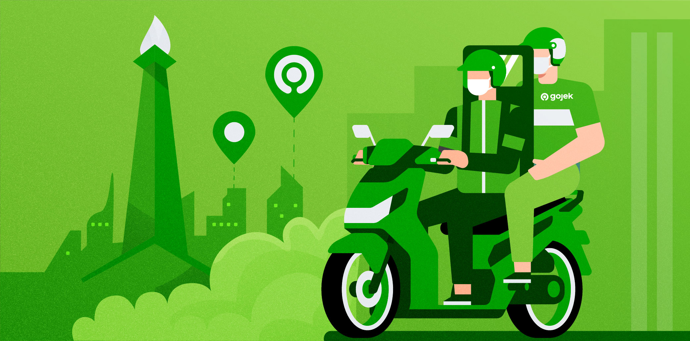

Gojek adalah sebuah platform teknologi yang bermula dari layanan ojek online di Indonesia, didirikan pada tahun 2010 oleh Nadiem Makarim. Awalnya, Gojek hanya menawarkan layanan transportasi dengan ojek, tetapi seiring dengan kebutuhan pengguna yang semakin berkembang, Gojek memperluas layanannya. Sekarang, Gojek tidak hanya menyediakan transportasi, tetapi juga layanan pengiriman makanan (GoFood), pengiriman barang (GoSend), pembayaran digital (GoPay), hingga layanan kebersihan dan pijat. Gojek merupakan bagian dari perusahaan induk bernama GoTo, hasil penggabungan dengan Tokopedia pada tahun 2021.
Visi Gojek adalah untuk menjadi platform layanan on-demand terdepan yang memberdayakan masyarakat dan menciptakan dampak positif bagi kehidupan sehari-hari.
1. Akses Mudah dan Efisien: Memberikan akses yang cepat dan praktis kepada berbagai layanan sehari-hari melalui teknologi.
2. Pemberdayaan Mitra: Memberdayakan mitra pengemudi dan penyedia layanan untuk mencapai kehidupan yang lebih baik dan meningkatkan kesejahteraan mereka.
3. Menciptakan Ekosistem Terintegrasi: Menghubungkan pengguna dengan berbagai layanan, seperti transportasi, pengiriman, pembayaran, dan layanan kesehatan.
1. Indonesia: Tersedia di lebih dari 50 kota besar.
2. Vietnam: Beroperasi dengan nama GoViet.
3. Thailand: Dikenal dengan nama GET.
4. Singapura: Menjadi pesaing utama di sektor ride-hailing.
5. Filipina: Proses ekspansi masih tertunda.